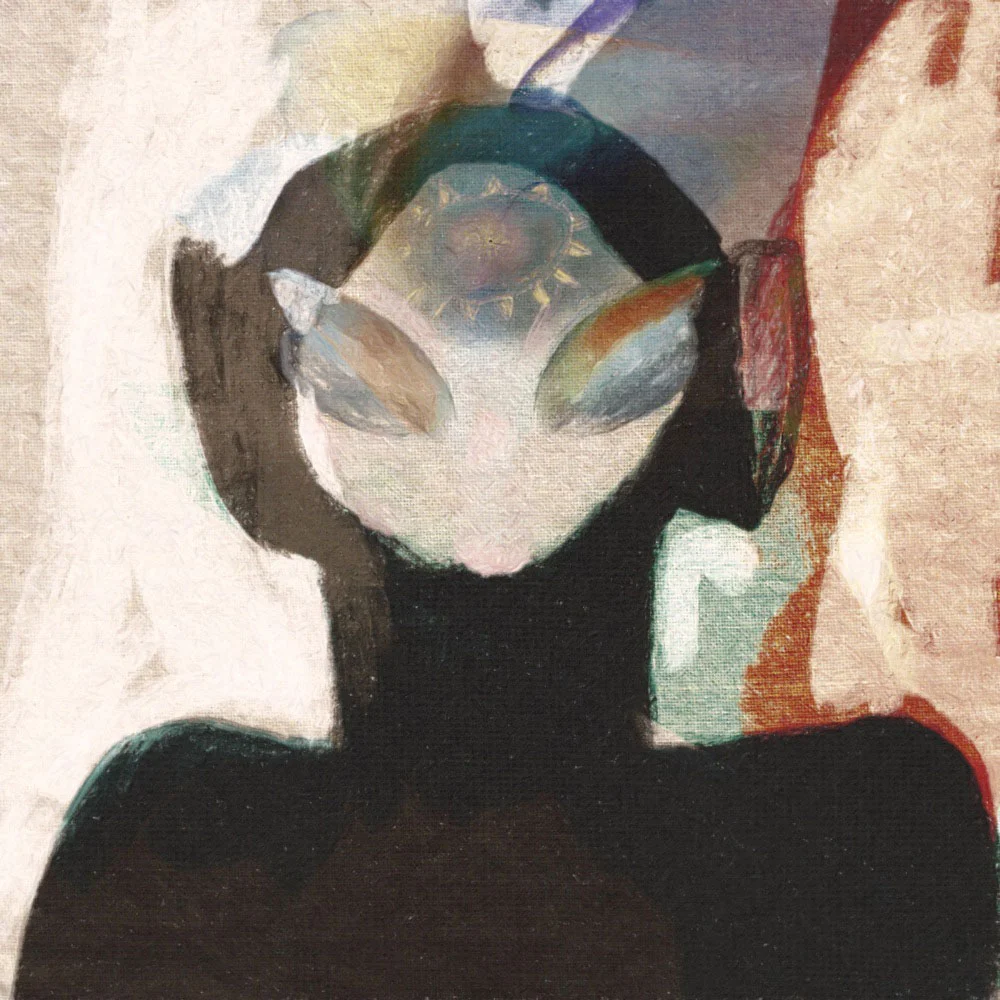
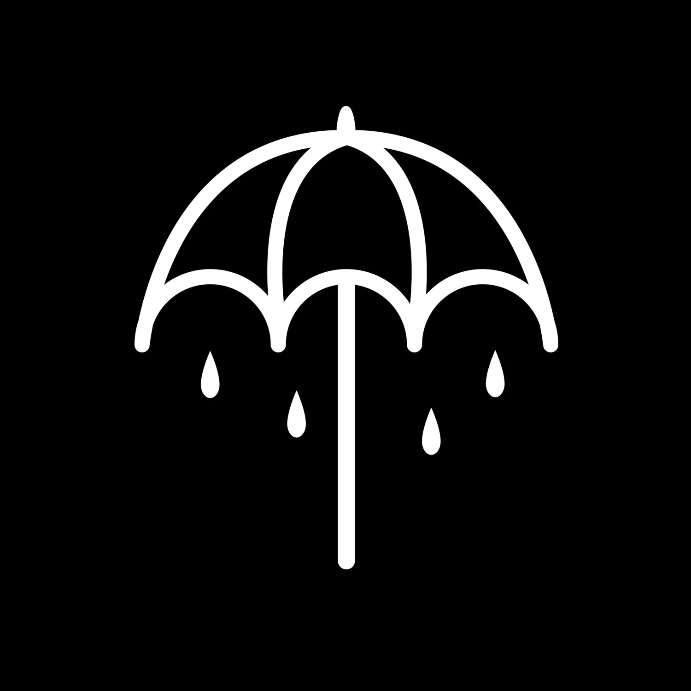
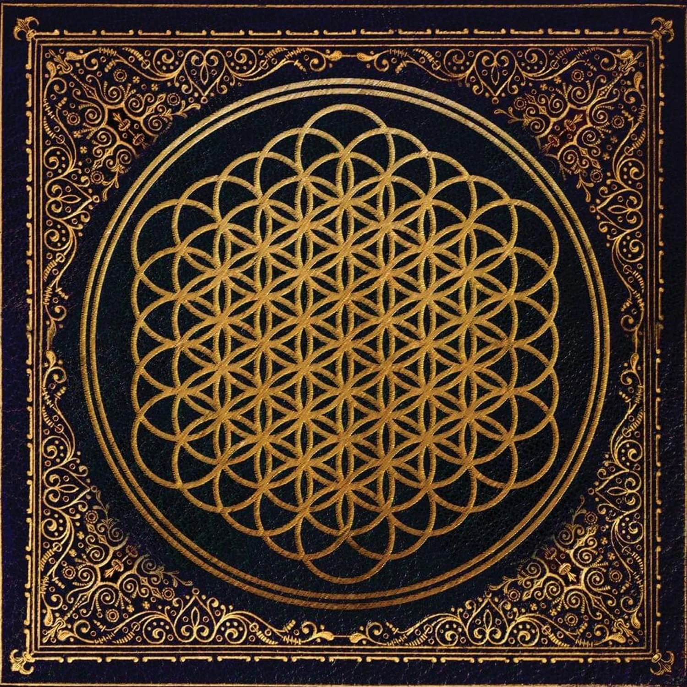
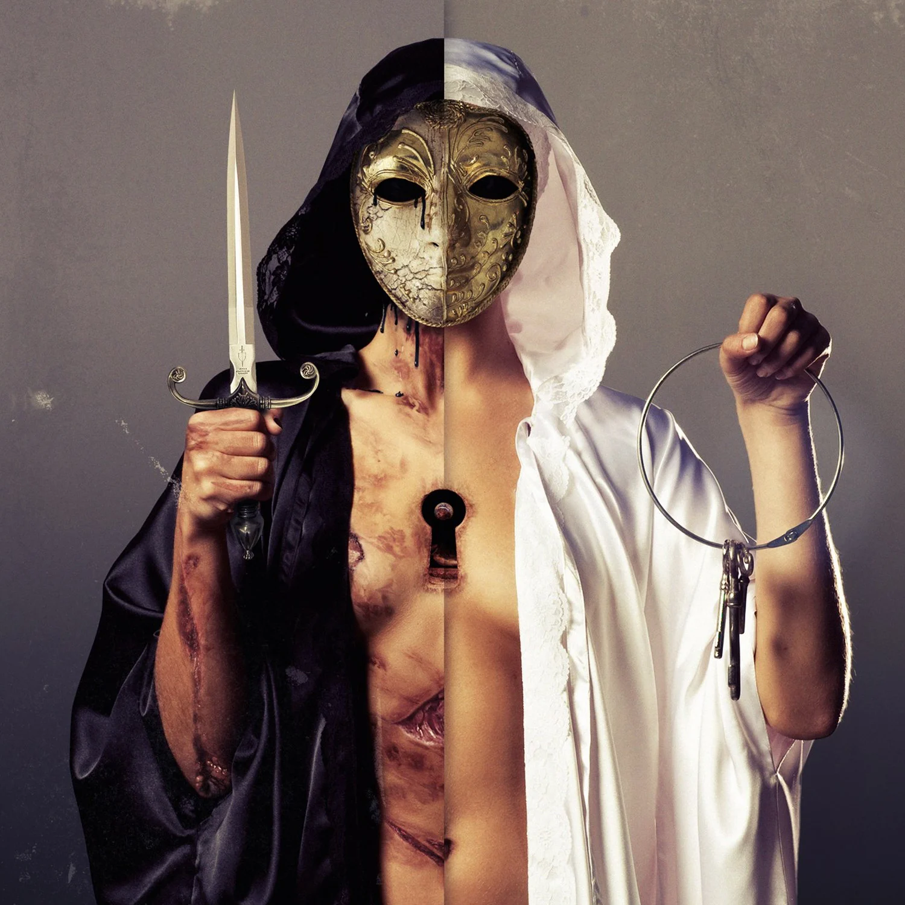
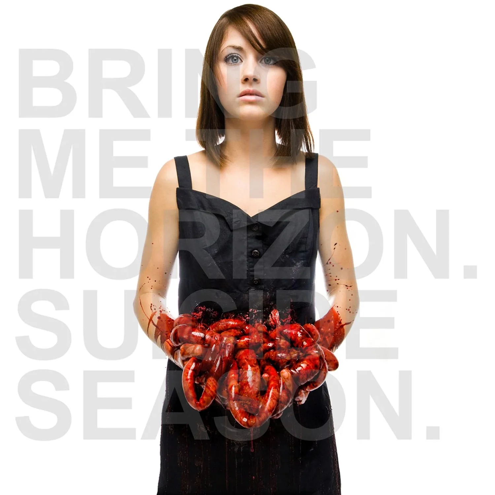
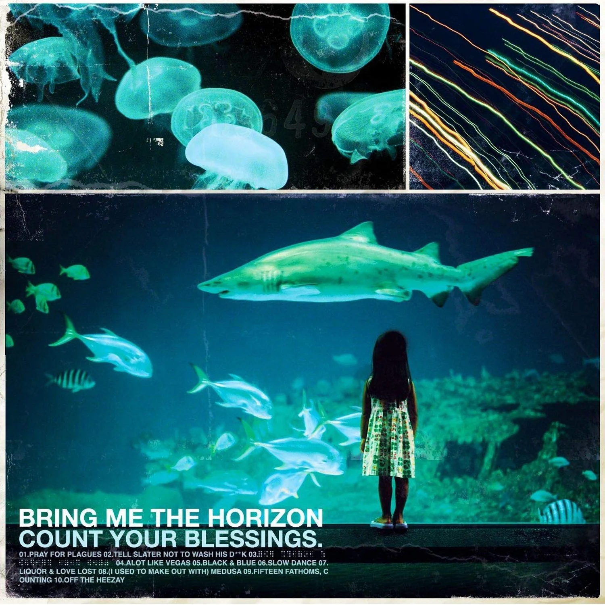
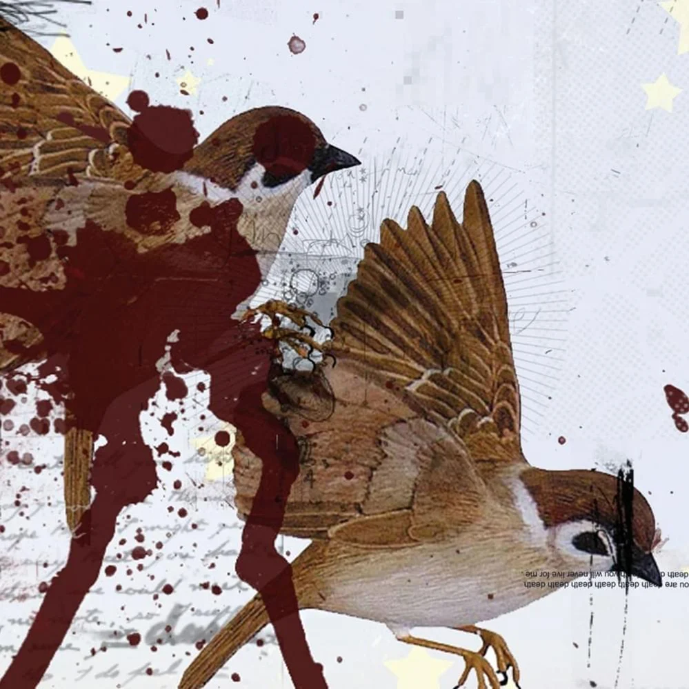

Post Human: Survival Horror is a commercial release by British rock band
Bring Me the Horizon. It was released on October 30, 2020. It was preceded
by three singles: "Parasite Eve", "Obey", and "Teardrops". "Ludens", which
was previously released as a single for the soundtrack Death Stranding:
Timefall in November 2019, was also included in the track listing. The
release was produced by frontman Oliver Sykes and keyboardist Jordan Fish,
with additional production from composer Mick Gordon. It is the first in a
series of four projects to be released by the band under the Post Human name.
The release received generally positive reviews from critics, with some
considering it a return to the heavier sound of the band's early material.
Track Listing
Dear Diary,
Parasite Eve
Teardrops
Obey
Itch For The Cure (When Will We Be Free?)
Kingslayer (feat. BABYMETAL)
1x1 (feat. Nova Twins)
Ludens
One Day The Only Butterflies Left Will Be In Your Chest As You March Towards
Your Death
Music To Listen To...

Description
Music to Listen to~Dance to~Blaze to~Pray to~Feed to~Sleep to~Talk to~Grind
to~Trip to~Breathe to~Help to~Hurt to~Scroll to~Roll to~Love to~Hate to~Learn
to~Plot to~Play to~Be to~Feel to~Breed to~Sweat to~Dream to~Hide to~Live to~Die
to~Go to (often abbreviated to Music to Listen To...) is a commercial release
by British rock band Bring Me the Horizon. It was released on December 27, 2019
without prior announcement. The release was produced by the band's vocalist
Oliver Sykes and keyboardist Jordan Fish, and features collaborations with
several artists including American singer Halsey and British band Yonaka.
Music to Listen To… is the longest musical project by Bring Me the Horizon,
and has been referred to as both an extended play and an album by varying
sources. The project originated as an idea to use elements from the band's
2019 album Amo and demos they had previously recorded.
Track Listing
Steal Something.
Candy Truck / You Expected: LAB Your Result: Green
A Devastating Liberation
¿ (feat. Halsey)
Underground Big {HEADFULOFHYENA} (feat. Bexey and Lotus Eater)
Like Seeing Spiders Running Riot On Your Lover's Grave (feat. Happyalone)
amo is the sixth studio album by British rock band Bring Me the Horizon.
It was released on January 25, 2019. It was produced by vocalist Oliver
Sykes and keyboardist Jordan Fish, and was written and recorded primarily
in Los Angeles. In the August 22, 2018 issue of Kerrang!, the band described
the album as "varied", "free", "weird" and "mental". Upon its release, the
album was met with critical acclaim and was later nominated for a Kerrang!
Award for Best Album as well as the Grammy Award for Best Rock Album.
Track Listing
i apologise if you feel something
MANTRA
nihilist blues (feat. Grimes)
in the dark
wonderful life (feat. Dani Filth)
ouch
medicine
sugar honey ice & tea
why you gotta kick me when i'm down?
fresh bruises
mother tongue
heavy metal (feat. Rahzel)
i don't know what to say
That's the Spirit

Description
That's the Spirit is the fifth studio album by British rock band Bring Me the
Horizon. The album was released on September 11, 2015, and marks a departure
from the group's metalcore roots, in favour of a less aggressive alternative
rock and metal style. The album debuted at number one in Australia and Canada,
number two in the UK Albums Chart, and the US Billboard 200. The album received
universal acclaim from music critics.
Track Listing
Doomed
Happy Song
Throne
True Friends
Follow You
What You Need
Avalanche
Run
Drown
Blasphemy
Oh No
Sempiternal

Description
Sempiternal is the fourth studio album by British rock band Bring Me the
Horizon. It was released on April 2, 2013. It is the first album to feature
former Worship keyboardist Jordan Fish and the first with guitarist Lee
Malia playing lead and rhythm. Written and recorded throughout 2012,
Sempiternal showed the band pull diverse influences from electronic music,
ambient music and pop. The album made its debut at No. 3 on the UK Album
Chart. It also managed to reach No. 11 on the US Billboard 200 with 27,522
first week sales, making Sempiternal the band's highest charting album in
America until That's the Spirit debuted at No. 2 in 2015. Upon its release,
the album received critical acclaim.
Track Listing
Can You Feel My Heart
The House Of Wolves
Empire (Let Them Sing)
Sleepwalking
Go To Hell, For Heaven's Sake
Shadow Moses
And The Snakes Start To Sing
Seen It All Before
Antivist
Crooked Young
Hospital For Souls
Join The Club
Chasing Rainbows
Deathbeds
There Is A Hell...

Description
There Is a Hell Believe Me I've Seen It. There Is a Heaven Let's Keep It
a Secret. (sometimes abbreviated to There Is a Hell...) is the third studio
album by British rock band Bring Me the Horizon. It was released on
October 4, 2010. The album was primarily produced by Fredrik Nordström and
Henrick Udd at IF Studios in Gothenburg, Sweden. It features guest vocals
from Canadian singer Lights, British singer Josh Franceschi, and American
vocalist Josh Scogin. The album expands on the band's previous material,
drawing from the metalcore genre and incorporating a wide variety of
experimentation. The band described Oliver Sykes' lyric writing as
"personal" and "darker and moodier than music on the previous albums".
There Is a Hell... received mostly favourable reviews from music critics,
who praised the album's musicianship, lyrical content, experimentation,
and maturity compared with the band's previous material.
Track Listing
Crucify Me (feat. Lights)
Anthem
It Never Ends
Fuck (feat. Josh Franceschi)
Don't Go (feat. Lights)
Home Sweet Hole
Alligator Blood
Visions
Blacklist
Memorial
Blessed With A Curse
The Fox and The Wolf (feat. Josh Scogin)
Suicide Season

Description
Suicide Season is the second studio album by British rock band Bring Me
the Horizon. It was released on November 18, 2008. The album shows a major
change musically from their previous releases, abandoning their original
deathcore sound. Critically, the album received a mixed response. Though
praised from the musical shift from the style of 2006's Count Your Blessings,
the album was criticised for its song writing and musical aesthetics. The
album has received more favourable retrospective analysis, notably surrounding
Bring Me the Horizon's later critical acclaim.
Track Listing
The Comedown
Chelsea Smile
It Was Written In Blood
Death Breath
Football Season is Over (feat. JJ Peters)
Sleep With One Eye Open
Diamonds Aren't Forever
The Sadness Will Never End (feat. Sam Carter)
No Need For Introductions, I've Read About Girls Like You On The Backs
Of Toilet Doors
Suicide Season
Count Your Blessings

Description
Count Your Blessings is the debut studio album by British rock band Bring
Me the Horizon. It was released on August 14, 2007. Count Your Blessings
is representative of the band's early deathcore sound, which was phased
out on later releases and eventually abandoned in favour of other, less
aggressive styles. The band members were young when they recorded the album,
and both the band and its fans have largely disregarded it later in their
career as inferior to their later material; it began as early as 2008,
when guitarist Lee Malia was already criticising the album's quality. Most
of the songs on the record quickly faded from the band's live setlists.
Most band members recorded their parts individually. The album received some
negative reviews, with the main complaints revolving around musical originality,
although it still reached number 93 on the UK Albums Chart.
Track Listing
Pray For Plagues
Tell Slater Not To Wash His D**k
Braille (For Stevie Wonder's Eyes Only)
A Lot Like Vegas
Black & Blue
Slow Dance
Liquor & Love Lost
(I Used To Make Out With) Medusa
Fifteen Fathoms, Counting
Off The Heezay
This Is What The Edge Of Your Seat Was Made For

Description
This Is What The Edge Of Your Seat Was Made For is the first EP by Bring
Me the Horizon. It was released on September 25, 2004. The EP received
heavy criticism. Jack Rogers writing for Rock Sound reviewed the song
"RE: They Have No Reflections" and commented that it is "Scrappy, heavy
and completely and utterly debauched".
Track Listing
RE: They Have No Reflections
Who Wants Flowers When You're Dead? Nobody.
Rawwwrr!
Traitors Never Play Hang-Man
Music To Listen To...
Description
Music to Listen to~Dance to~Blaze to~Pray to~Feed to~Sleep to~Talk to~Grind
to~Trip to~Breathe to~Help to~Hurt to~Scroll to~Roll to~Love to~Hate to~Learn
to~Plot to~Play to~Be to~Feel to~Breed to~Sweat to~Dream to~Hide to~Live to~Die
to~Go to (often abbreviated to Music to Listen To...) is a commercial release
by British rock band Bring Me the Horizon. It was released on December 27, 2019
without prior announcement. The release was produced by the band's vocalist
Oliver Sykes and keyboardist Jordan Fish, and features collaborations with
several artists including American singer Halsey and British band Yonaka.
Music to Listen To… is the longest musical project by Bring Me the Horizon,
and has been referred to as both an extended play and an album by varying
sources. The project originated as an idea to use elements from the band's
2019 album Amo and demos they had previously recorded.
Track Listing
Steal Something.
Candy Truck / You Expected: LAB Your Result: Green
A Devastating Liberation
¿ (feat. Halsey)
Underground Big {HEADFULOFHYENA} (feat. Bexey and Lotus Eater)
Like Seeing Spiders Running Riot On Your Lover's Grave (feat. Happyalone)
That's the Spirit is the fifth studio album by British rock band Bring Me the
Horizon. The album was released on September 11, 2015, and marks a departure
from the group's metalcore roots, in favour of a less aggressive alternative
rock and metal style. The album debuted at number one in Australia and Canada,
number two in the UK Albums Chart, and the US Billboard 200. The album received
universal acclaim from music critics.
Track Listing
Doomed
Happy Song
Throne
True Friends
Follow You
What You Need
Avalanche
Run
Drown
Blasphemy
Oh No
There Is A Hell...
Description
There Is a Hell Believe Me I've Seen It. There Is a Heaven Let's Keep It
a Secret. (sometimes abbreviated to There Is a Hell...) is the third studio
album by British rock band Bring Me the Horizon. It was released on
October 4, 2010. The album was primarily produced by Fredrik Nordström and
Henrick Udd at IF Studios in Gothenburg, Sweden. It features guest vocals
from Canadian singer Lights, British singer Josh Franceschi, and American
vocalist Josh Scogin. The album expands on the band's previous material,
drawing from the metalcore genre and incorporating a wide variety of
experimentation. The band described Oliver Sykes' lyric writing as
"personal" and "darker and moodier than music on the previous albums".
There Is a Hell... received mostly favourable reviews from music critics,
who praised the album's musicianship, lyrical content, experimentation,
and maturity compared with the band's previous material.
Track Listing
Crucify Me (feat. Lights)
Anthem
It Never Ends
Fuck (feat. Josh Franceschi)
Don't Go (feat. Lights)
Home Sweet Hole
Alligator Blood
Visions
Blacklist
Memorial
Blessed With A Curse
The Fox and The Wolf (feat. Josh Scogin)
Count Your Blessings
Description
Count Your Blessings is the debut studio album by British rock band Bring
Me the Horizon. It was released on August 14, 2007. Count Your Blessings
is representative of the band's early deathcore sound, which was phased
out on later releases and eventually abandoned in favour of other, less
aggressive styles. The band members were young when they recorded the album,
and both the band and its fans have largely disregarded it later in their
career as inferior to their later material; it began as early as 2008,
when guitarist Lee Malia was already criticising the album's quality. Most
of the songs on the record quickly faded from the band's live setlists.
Most band members recorded their parts individually. The album received some
negative reviews, with the main complaints revolving around musical originality,
although it still reached number 93 on the UK Albums Chart.